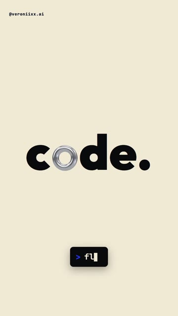
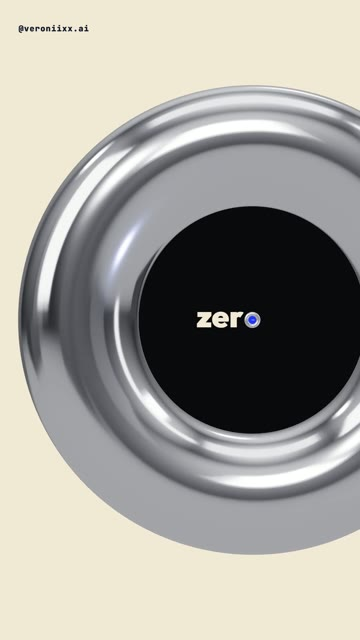
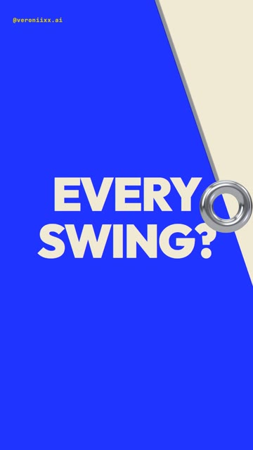
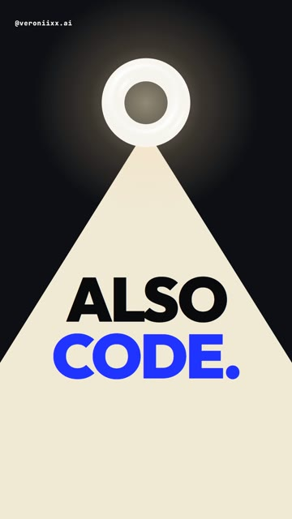
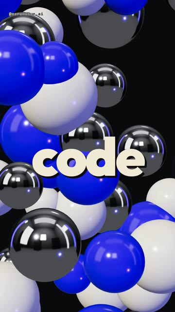

How I made a 19-second showreel where one chrome letter does every transition: the camera flies through the “o”, the “o” becomes a pendulum, then a lamp, then 16 3D worlds flash behind one word. Every transition is a line of code typed on screen. It never ends. No editing app. The full brief, ready to paste. Windows and Mac.





A fast kinetic typography reel with one hero: a chrome “o” in real 3D, sitting inside flat words. Claude writes the typography, the 3D, the timing and the music. You write the words.
The words are flat and the “o” is real 3D, drawn on a transparent canvas on top. To fly through a letter, the flat words scale up around the hole and the 3D camera moves toward the torus at the same speed. The next word is clipped inside the hole, already waiting. When the hole fills the screen, the next word is the new frame.
Windows Press Win, type PowerShell, open it.
Mac Press Cmd + Space, type Terminal, open it.
Windows Paste one line at a time. Answer Y when asked.
winget install -e --id OpenJS.NodeJS.LTS winget install -e --id Git.Git winget install -e --id Python.Python.3.13 winget install -e --id Gyan.FFmpeg
Mac Homebrew first, it will ask for your password. At the end it prints two lines under “Next steps”: run them, then run the second command.
/bin/bash -c "$(curl -fsSL https://raw.githubusercontent.com/Homebrew/install/HEAD/install.sh)"
brew install node git python ffmpeg
npm install -g @anthropic-ai/claude-code
Prefer an app to a terminal? Install Claude from claude.ai/download, it has a Code tab that does the same thing.
mkdir code-reel\ncd code-reel\nclaude
Set up a motion project in this folder. 1. Install Remotion (React 18 + TypeScript) with @remotion/three, three and @react-three/fiber. 2. Check that Python has numpy, scipy, soundfile and pyloudnorm. Install what is missing. 3. Check that ffmpeg works from the terminal. 4. Build a test composition, 1080x1920, 60 fps: a word in a heavy font on a cream background, and on top of it a transparent three.js canvas with one chrome torus (metalness 1, roughness 0.12) lit by an environment map. Render one frame to PNG with the GL backend set to "angle" and show me the path. If something is missing, install it yourself and tell me what you installed. If something fails, find the cause and fix it.
Words in square brackets are mine: put your own. Words for the fly-through need an “o” and must be short, or they run off the frame.
Build a vertical kinetic typography showreel in Remotion, with three.js for the 3D. 1080x1920, 60 fps, 19.2 seconds, a seamless loop with no ending. All text in English. Keep text out of the top 220 px and the bottom 380 px (the Instagram interface).
THE HERO
The letter "o" made of chrome. It is a real 3D torus (metalness 1, roughness about 0.12, an environment map for reflections) drawn on a transparent canvas over flat typography. It sits exactly where the "o" would be in a heavy font (I used Outfit 900), so the word reads normally. The same "o" does every transition in the reel.
THE GIMMICK
Before every transition a line of code types itself on screen in a dark pill with a mono font, then turns blue on "Enter" and the transition fires exactly on that frame:
[fly.through("o")] / [swing(24)] / [light.on()] / [drop()] / [loop()]
The viewer sees that every transition is one line.
THE TIMELINE (150 BPM: one beat = 12 frames at 30 fps; work in 30 fps units and render at 60 fps; every event on a beat or half beat)
1. HOOK (0-1.4 s). One word every half beat, the background flips between black, cream and blue on every word, each word lands with a short scale punch: [this / video / has / no / editor. / it's]
2. THE WORD (1.4-2.4 s). [code.] on cream. The "o" is the chrome torus and spins once. Inside its hole you can already see the next word, tiny.
3. FLY THROUGH (2.4-4.4 s). The camera flies into the hole of the "o". The next word is inside, with its own "o", and the camera flies through that one too: [code.] -> [zero] -> [tools.]. Every word is centered, so the camera also slides sideways to the next "o" while it flies. The 3D torus and the 2D words must stay locked together during the flight (mind the parallax).
4. PENDULUM (4.4-9.2 s). The "o" pops out of [tools.] and becomes the weight of a pendulum on a thin rod. Five swings. Each swing is fast through the middle and hangs at the edge (a quintic ease). The rod wipes the old page and leaves the new one behind it, every page its own color:
[YOU THINK / THIS IS / EDITED?] -> [IT'S A / FUNCTION.] -> [EVERY / SWING?] -> [ONE / LINE.] -> the last swing wipes everything into darkness.
5. LAMP (9.2-12.8 s). The "o" breaks off the rod, flies to the top and lights up like a ring light. A cone of light comes in from the left, opens on [LIGHT?] so the whole word is lit, swings away, comes back on [ALSO / CODE.], then the light opens to the full frame. [ALSO] flies up and [CODE.] slides into the exact place where the word of the next scene stands.
6. DROP (12.8-16 s). The word [code] stays still in the middle. Behind it a new 3D world every half beat, 16 cuts: a liquid chrome blob, a blue metal wave, a pit of glossy balls, a tunnel of rings, a particle vortex, a chrome ball over a neon grid, a helix of rings, an equalizer of bars. The word bounces a little on every cut.
7. END (16-19.2 s). [made with / claude] on cream, then [you just / watched / code.] on black with the chrome "o" slamming into the word.
8. LOOP. [loop()] types and fires. The camera flies through the "o" of [code.] and comes out on the very first frame: [this] on black. The last frame must be the first frame.
STYLE
Few colors: black, cream and one electric blue (#2133FF), plus real chrome. No blur and no shake on text. Every word stands still and whole for at least a few frames.
SOUND (synthesize in numpy, no samples)
Something new, not a breakbeat and not trap: a straight four-on-the-floor kick at 150 BPM, an acid bass in D minor, 8-bit square-wave notes. Key clicks for every character of every code line and an "Enter" thock when it fires. A metal ring for the chrome "o", a whoosh into every fly-through, a sub drop when you land inside a letter, a whoosh on every swing, a switch click and a hum for the lamp, a riser and a clap roll into the drop, a glitch on every cut. Loop the tails into the start. Master to -14 LUFS, peak below -1 dBTP.
CHECK BEFORE YOU SAY DONE
1. Render storyboard strips first: 6 real frames per transition, from the code, not mockups.
2. Then a draft at 540x960, 60 fps, with sound.
3. Check: no word is cut off by the frame edge, the code pill never covers text, the 3D "o" sits exactly in the word in every frame of the fly-through.
4. Compare the first and the last frame: the loop must not jump.
5. Then the final 1080x1920. Tell me what you checked and what I should watch for in motion.Watch the draft on your phone, on repeat. Then send notes like these. The first four are almost word for word what I wrote while making this reel.
It looks nice but there is not enough intensity. Put everything on the beat, a word every half beat, a punch on every event, and add real 3D.
I want transitions through an object, like a lamp or a pendulum, not just cuts. One object should carry the viewer from scene to scene.
Make the next word appear inside a letter of the current one and fly the camera through it.
The video should not end. The last frame must lead straight into the first one, the viewer should not notice where it loops.
A word in the fly-through runs off the edge of the frame. Pick a shorter word or center each word and move the camera to its letter.
Replace the words with mine: [your hook], [your three words with an o], [your pendulum questions], [your handle]. Keep one word per half beat.
Yes. Change the words and the three colors. The chrome letter can be any letter with a hole: o, a, e, d, the 0 in a number.
No. You need to know what you want to see and say it clearly. Claude builds the words, the chrome letter, the worlds and the music from code.
Copy it and paste it to Claude with the words “here is the error, fix it and continue”.